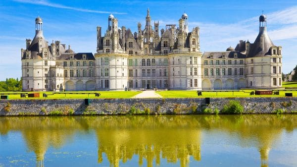
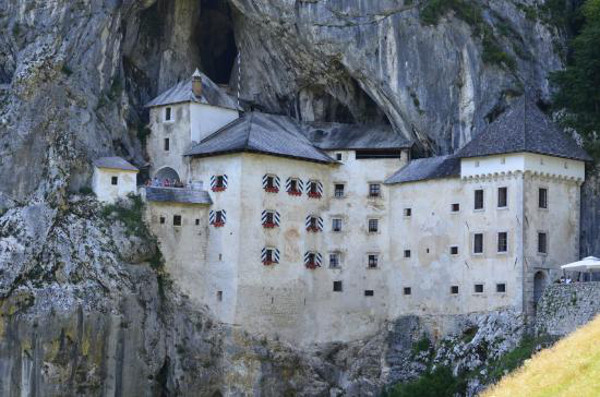
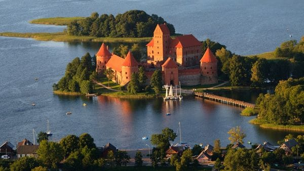
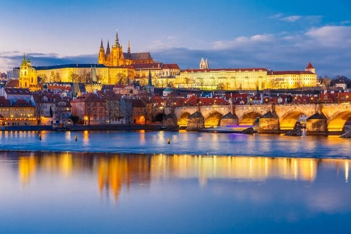
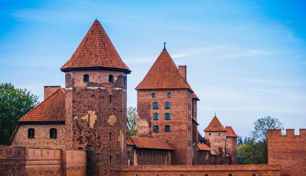
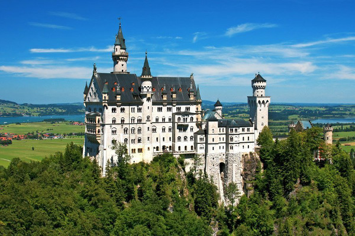
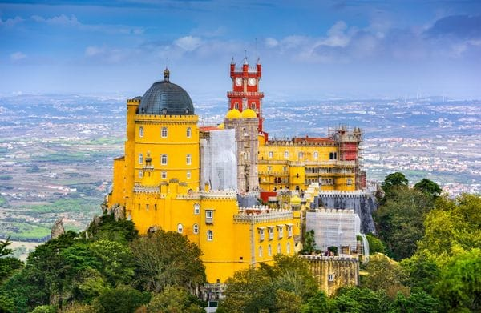

Los castillos, con sus altos muros, torres y fosos, encierran una mística particular (istock)
Los castillos, con sus altos muros, torres y fosos, encierran una mística particular. Los primeros se remontan a las estructuras militares griegas, y fueron evolucionando a través del tiempo. Según cada época y lugar en el mundo, sus características fueron cambiando, y las fortificaciones comenzaron a ser cada vez más avanzadas y a alojar a la realeza, o a personas importantes dentro de cada ordenamiento político de cada era.
En su momento significaron el lugar más seguro, el más sagrado de las poblaciones y hoy quedaron consagrados como unas joyas arquitectónicas para la humanidad. De piedra, de ladrillo, los castillos todavía logran impactar a cualquier visitante que acude a ellos, tanto por la imponencia de su imagen como la historia que esconden sus pasillos internos. A continuación, siete castillos europeos que mantienen su maravilla de antaño:
Castillo de Chambord
El castillo de Chambord en la región del Centro-Valle de Loira fue construido en 1519 (istock)
Un ejemplo magnífico de la grandeza del Renacimiento francés, el castillo de Chambord en la región del Centro-Valle de Loira fue construido en 1519, por encargo de Francisco I. Fue ideado en un principio como pabellón de caza para la corte real, y no servía como residencia. De sus 440 habitaciones, 100 se encuentran hoy abiertas al público, que pueden deambular por sus infinitas escaleras y sus increíbles espacios verdes.
Castillo de Predjama
El Castillo de Predjama es una de las grandes joyas arquitectónicas de Europa (istock)
El Castillo de Predjama es una de las grandes joyas arquitectónicas de Europa. Está ubicado dentro de la boca de una cueva, a unos 9 km. de la ciudad de Postojna, en Eslovenia. Su localización es tan particular que su nombre en esloveno significa "el castillo de la cueva". Fue construido en 1570 y se convirtió en el primer castillo de la región en ser edificado encima de un terreno de tipo kárstico. En la actualidad es un gran atractivo turístico.
Castillo de la Isla Trakai
La maravillosa fortaleza ubicada en la isla Trakai, a la orilla del lago Galvé, en Lituania
La maravillosa fortaleza ubicada en la isla Trakai, a la orilla del lago Galvé, en Lituania, es una de las más hermosas piezas arquitectónicas del país. Su construcción se inició en la segunda mitad del siglo XIV y fue finalizada en el 1409. Durante un gran período fue uno de los establecimientos principales del Gran Ducado de Lituania y tuvo una importancia estratégica clave para la región.
Castillo de Praga
Es una de las grandes joyas de la antigüedad en todo el planeta (istock)
Es una de las grandes joyas de la antigüedad en todo el planeta. El Castillo de Praga fue construido nada menos que en 870 y está consagrado como el castillo antiguo más grande del mundo, con una superficie de 70.000 m2. Su historia registra hechos de los más variados. Fue en 1918 el hogar del presidente de la nueva República Checoslovaca y, en 1939, llegó a hospedar durante una noche nada menos que a Adolf Hitler. Como si fuera poco también fue escenario de los videojuegos "Indiana Jones and the Emperor's Tomb" y "Assasssin Creed IV, Black Flag"
Castillo de Malbork
Se trata del castillo de ladrillos más grande del mundo (istock)
Si se habla de construcciones imponentes, el Castillo de Malbork, ubicado en Polonia, no puede quedarse afuera. Se trata del castillo de ladrillos más grande del mundo. Fue construido en 1406 como una clásica fortaleza medieval y en 1997 fue designado por la UNESCO como patrimonio de la humanidad. Además, en 1994 fue nombrado como uno de los monumentos históricos de Polonia. El sector principal del castillo fue destruido durante la Segunda Guerra Mundial y tuvo que ser restaurado entre 1959 y 1962.
Castillo Neuschwanstein
El Castillo Neuschwanstein es quizás uno de los más famosos del mundo (istock)
El Castillo Neuschwanstein es quizás uno de los más famosos del mundo. Está situado en Baviera, Alemania y fue construido en 1866 por orden del llamado "rey loco", Luis II de Baviera. Tiene 1,4 millones de visitantes anuales, lo que lo convierte en el castillo más visitado del país. Su particular arquitectura despertó el interés en el mundo del espectáculo. Fue elegido por Walt Disney como modelo para el diseño del castillo de La Bella Durmiente y fue utilizado por Andy Warhol como motivo en su litografía Neuschwanstein, en 1987.
Palacio da Pena
Fue la residencia de la familia real portuguesa en el siglo XIX y hoy se destaca en la ciudad de Sintra (istock)
Fue la residencia de la familia real portuguesa en el siglo XIX y hoy se destaca en la ciudad de Sintra (Portugal) por su estilo arquitectónico tan particular. El Palacio da Pena combina los estilos romántico y renacentista con el gótico e islámico. Los verdes arbustos que lo rodean le dan un toque especial en contacto con la naturaleza. Lo más llamativo de esta residencia real es su arquitectura, o, más bien, los varios estilos de distintas escuelas utilizados, claramente observables hasta por el menos adepto en esta área: hay elementos del Neogótico, Neomanuelino, Neoislámico, Neorrenacentista y hasta Colonial.